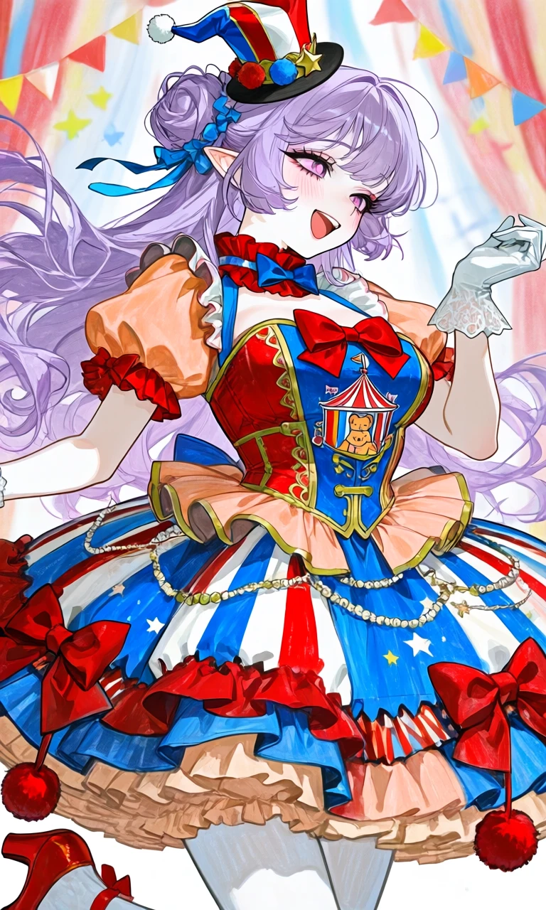
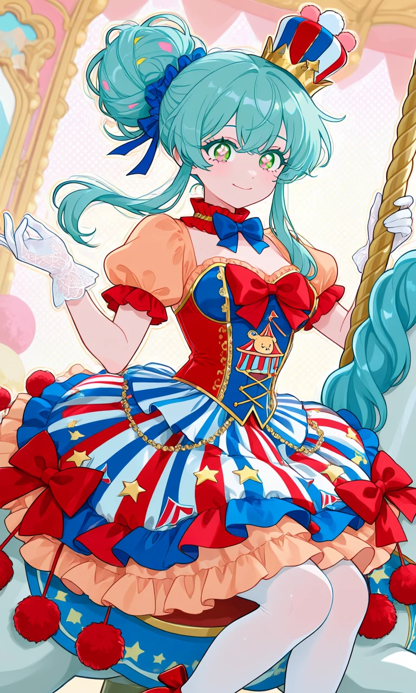

Big Top Royalty

Outfit Prompt
She is wearing a Sweet Lolita jester outfit.
The outfit is highly detailed:
Headwear: Mini jester-style hat: A small, structured hat. It features red, white, and blue sections with pom-poms on top and a star accent — evoking a circus ringmaster.
Hair accessories: Blue ribbons and bows are woven into the messy updo/bun style, adding cute asymmetry and movement.
Upper Body and Accessories: Corset-style bodice: The top is a fitted, structured corset in red and blue with gold accents. It has a prominent large red bow at the center bust, decorative lacing or trim details, and a carnival "big top" tent motif printed on the front panel (complete with a small illustrated bear inside a circus tent).
Sleeves: Short, puffed sleeves in a contrasting peach/orange tone with red ruffled cuffs.
Neckwear: A red ruffled choker with a matching blue bow tie at the front.
Gloves: Delicate white lace gloves with ruffled cuffs — one arm is raised gracefully, the other extended.
Overall silhouette: The dress has a classic Sweet Lolita high waist, emphasizing a tiny waist with the corset and creating a bell-shaped skirt.
Skirt and Lower Half: Multi-layered, high-volume skirt: This is the standout feature. It's a tiered, ruffled skirt with bold vertical stripes in red, white, and blue (reminiscent of circus tents, barber poles, or carnival banners).
Layers include pleated sections, ruffles in peach and blue, and asymmetrical draping.
Large red fabric bows and pom-poms (red velvet balls on strings) dangle from the hem and sides for extra playfulness.
Additional details: Star patterns, zigzag trim, pearl-like chains, and more carnival motifs (flags, stars, stripes).
Underskirt: A lighter peach or beige ruffled layer peeks out underneath for added fluff.
Legs: Sheer white stockings or tights, visible below the skirt. Red boot heels.
Outfit Examples



